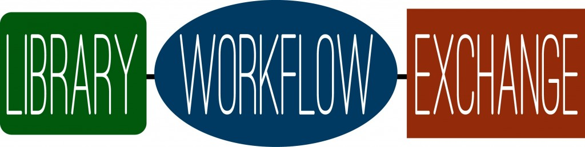
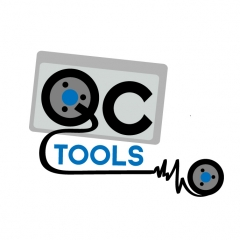
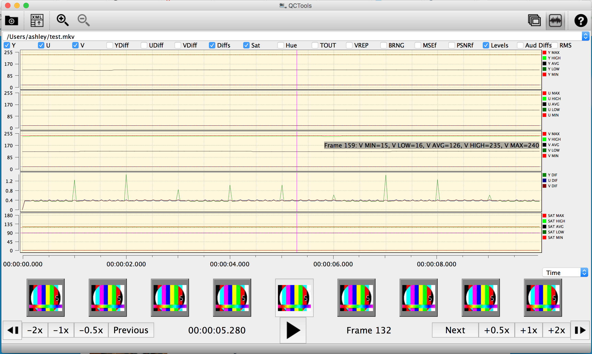
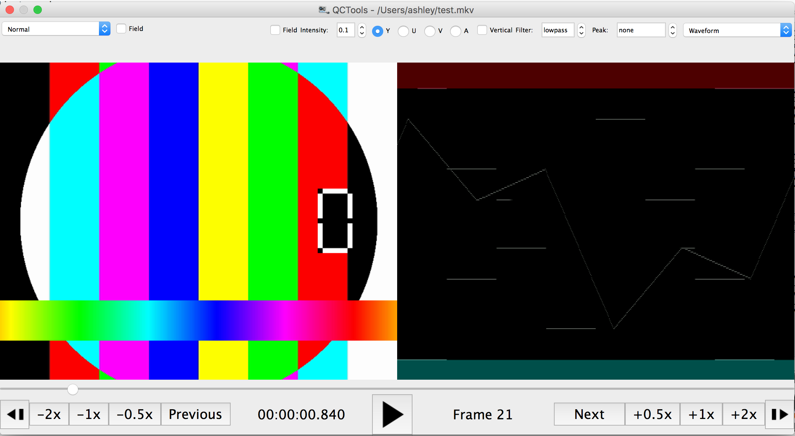
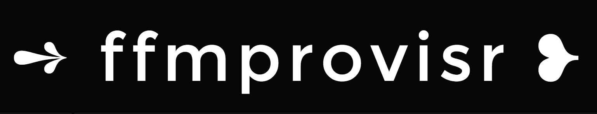
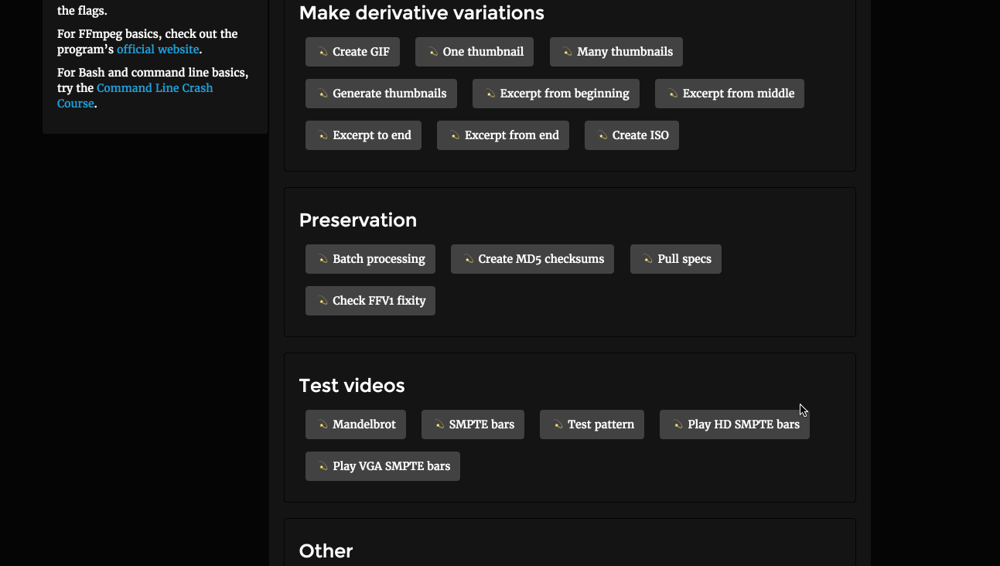
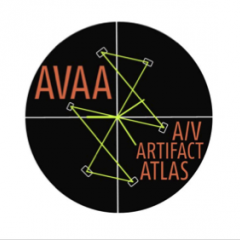
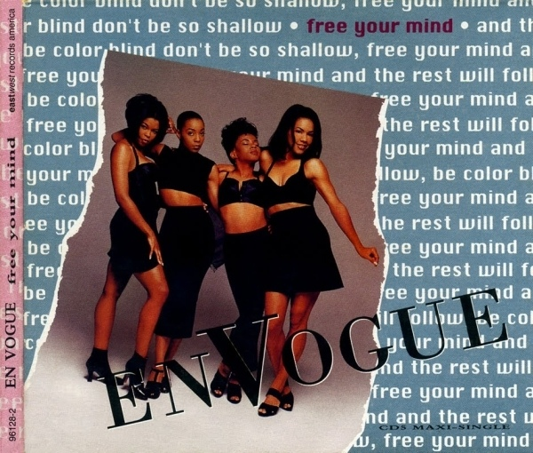

FREE YOUR WORKFLOWS
open sourcing audio visual archiving and preservation workflows, software, and file formats
Librarians and archivists love good documentation.
Librarians and archivists care about making information accessible.
These two concepts often are not paired together.
Why the gap between theory and practice?
Time & Money
Writing the docs
Scary
Feedback
A/V
open workflows
open source
open access
open file formats
#goals
many hands make light work (and less stress)
staying alive
Sharing vulnerability
Global impact
Tangibility
Microservices (at institutional level)

git-init

Library Workflow Exchange
Dinah's things
media microservices
vrecord








These are all microservices!

... and the rest will follow ...
In conclusion
Grow beyond your institution
More people, more perspectives
More contributions
Supportive environments
No reinventing the wheel
Opens up time for other things
Community
Shared goals
Links!
These slides: github.com/ablwr/free_your_workflows
github.com/mediamicroservices/mm
github.com/mediaarea/mediaconch
github.com/bavc/qctools
github.com/amiaopensource/vrecord
github.com/amiaopensource/ffmprovisr
avaa.bavc.org/artifactatlas/index.php/A/V_Artifact_Atlas
... and the rest will follow ...